Il brief di questo progetto accademico era quello di sviluppare una collana editoriale dal titolo “Alfabeti tipografici”, attorno a una tematica scelta liberamente. La collana doveva essere strutturata in tre tomi, ciascuno rispettivamente con il titolo “Numeri”, “Lettere” e “Segni”; tutti i tomi dovevano essere in scala di grigi. L’argomento scelto doveva quindi essere declinato all’interno di ogni volume secondo il criterio esplicitato dal titolo. Il progetto aveva lo scopo di unire la figura del progettista grafico a quella del redattore, così da prendersi cura non solo degli aspetti grafici ma anche dei contenuti stessi.

“Alfabeti Tipografici” è una collana editoriale che tratta degli sviluppi evolutivi in ambito tipografico, dalle origini fino alla contemporaneità. L’argomento è stato declinato, attraverso i tre volumi che compongono la collana, dal punto di vista di numeri, lettere e segni.
Trattandosi di una collana dedicata alla storia del settore tipografico, l’intento è stato quello di richiamare i canoni classici di impaginazione, basando il formato dei volumi e le proporzioni della gabbia interna su proporzioni auree. Le copertine sono state progettate con l’intento di richiamare le pagine interne dei volumi e allo stesso tempo esaltare i concetti di numeri, lettere e segni che rappresentano ciascuno i singoli tomi.
Formato finale: 80x130 mm.
Carta del volume: Freelife Vellum 140 g/m².
Carta della copertina: Arena Eco 280 g/m². Plastificazione soft touch.
Legatura: brossura cucita.
Segnature: 4/16esimi.
Il primo volume, come una linea del tempo, ha l’intento di ripercorrere i principali eventi che hanno condotto alla nascita e allo sviluppo del settore tipografico, partendo dalle origini più antiche, passando per le rivoluzionarie invenzioni dell’Ottocento, fino ad arrivare alle più moderne tecniche di stampa digitale.
Il secondo volume ha l’intento di declinare l’argomento principale dal punto di vista dei caratteri tipografici, raccontandone la storia e le caratteristiche. La narrazione è stata concepita in ordine alfabetico e comprende gli esempi più illustri di type design che hanno caratterizzato l’evoluzione del settore tipografico.
 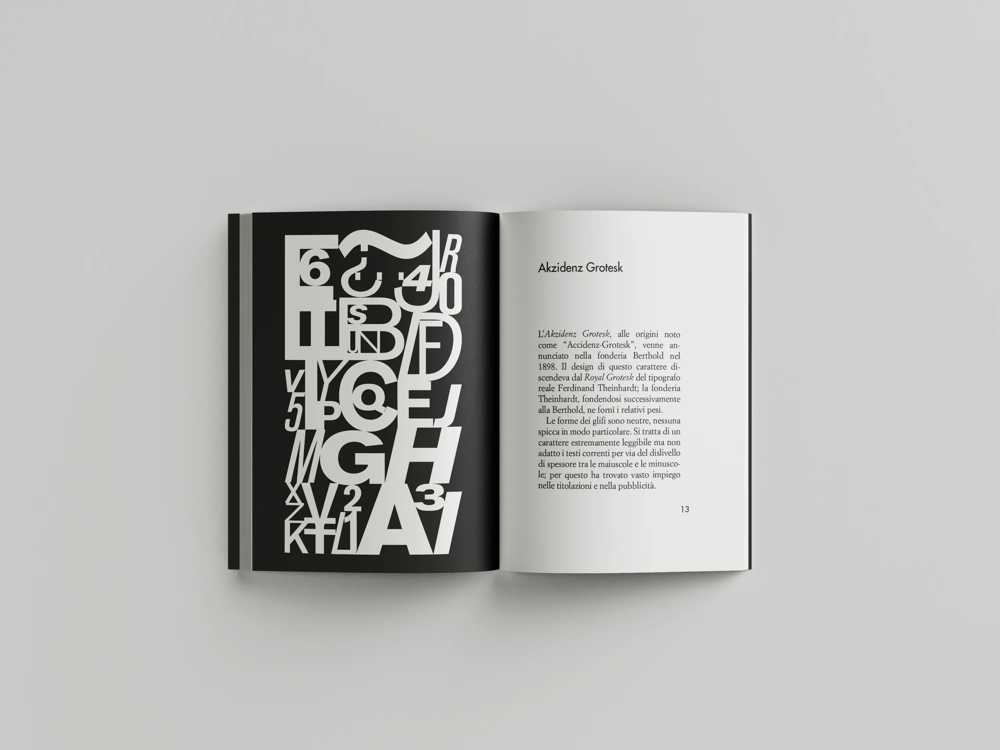
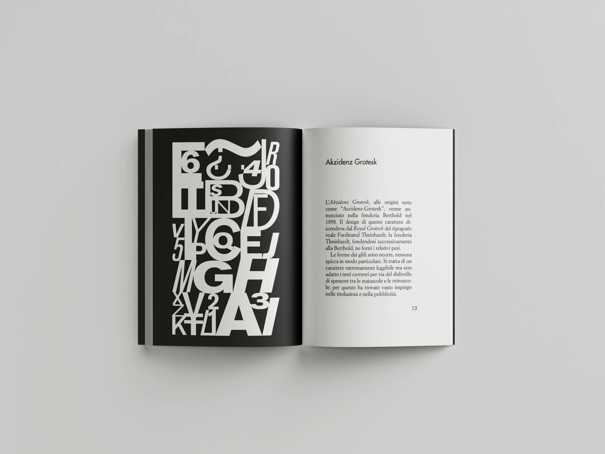
 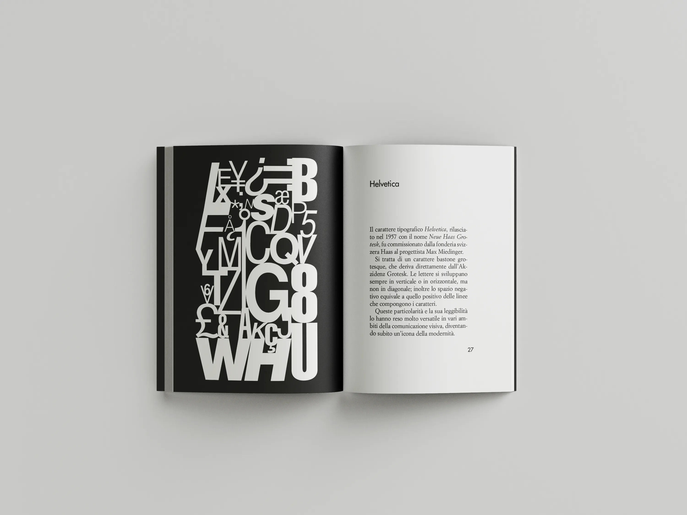
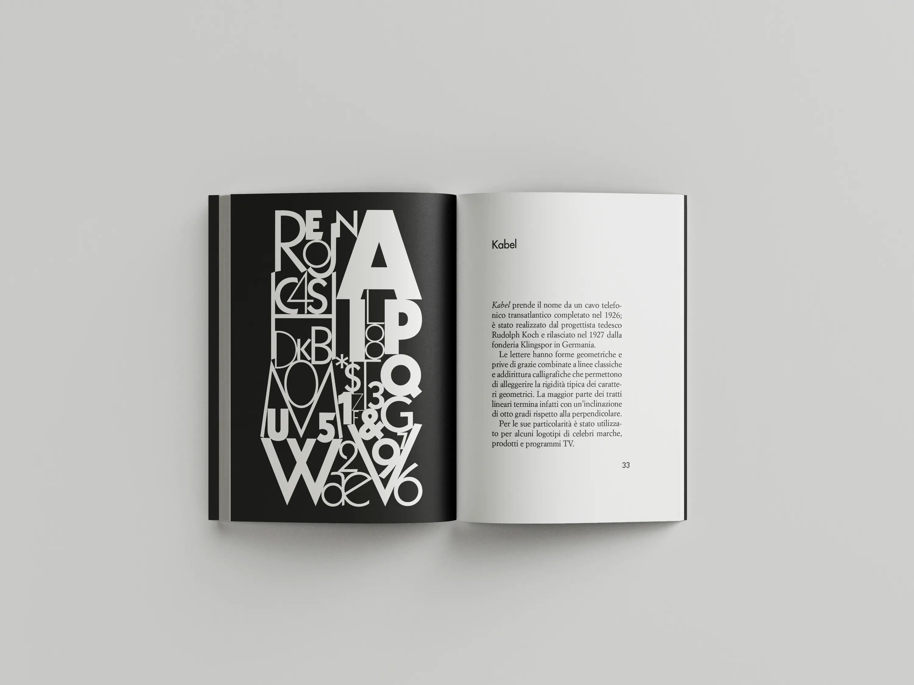
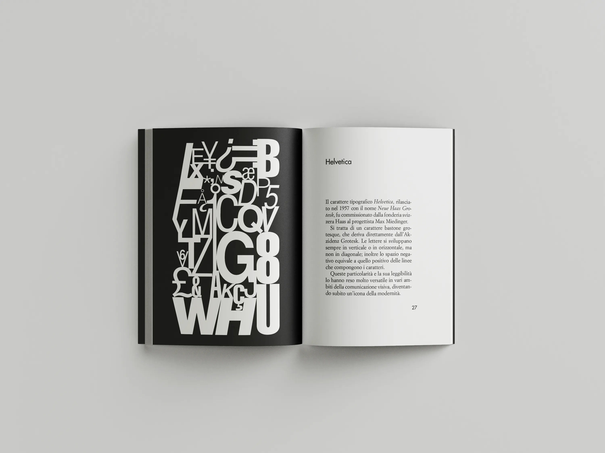
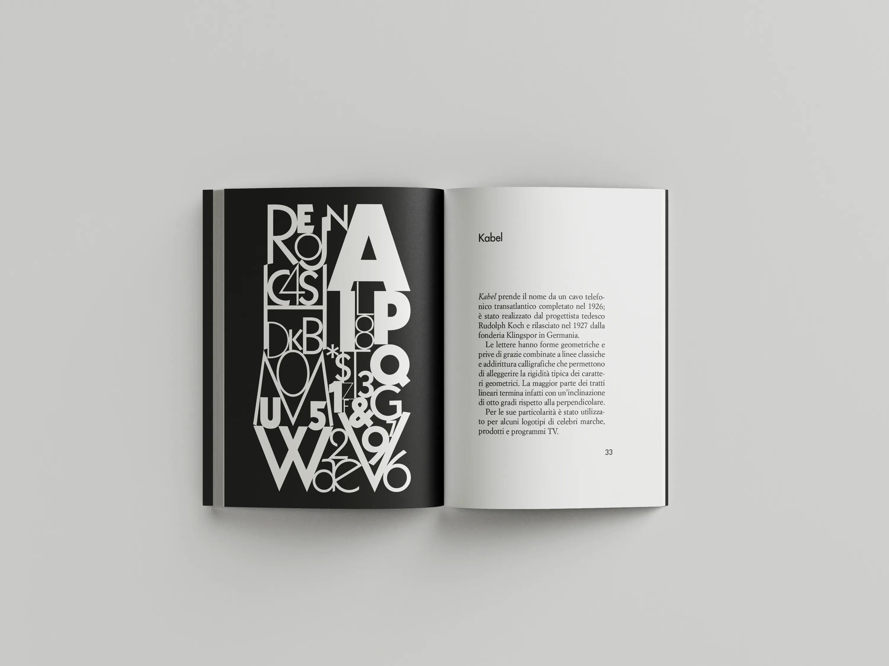
 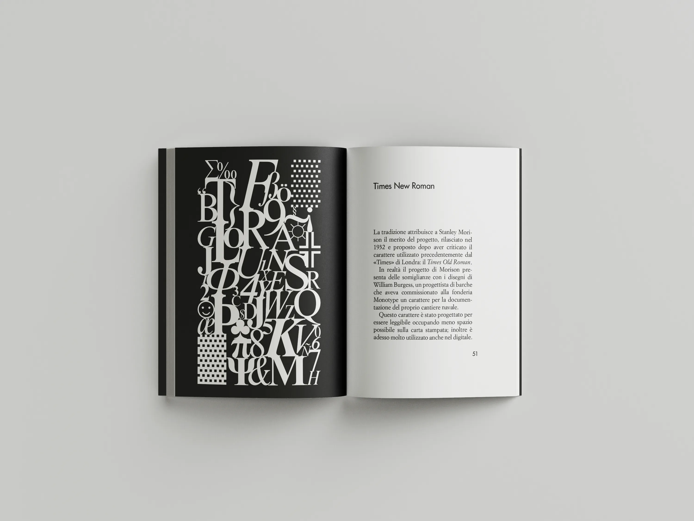
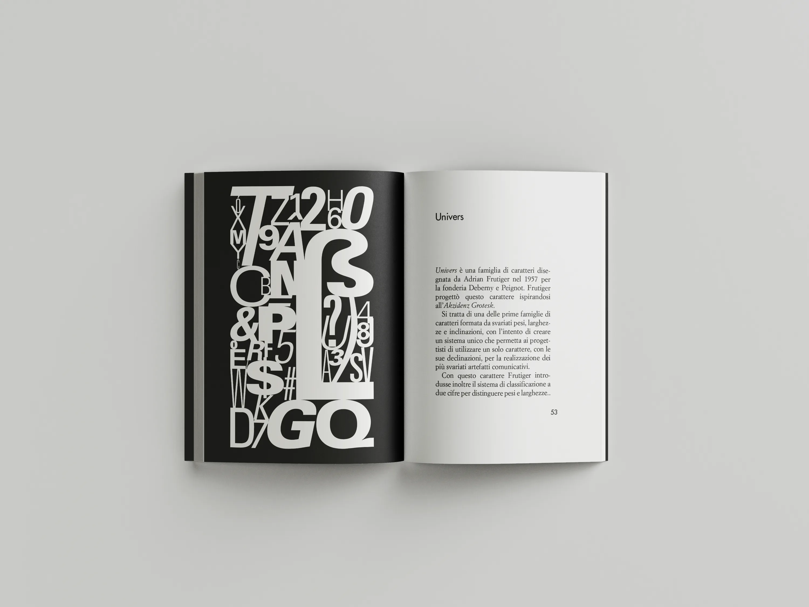
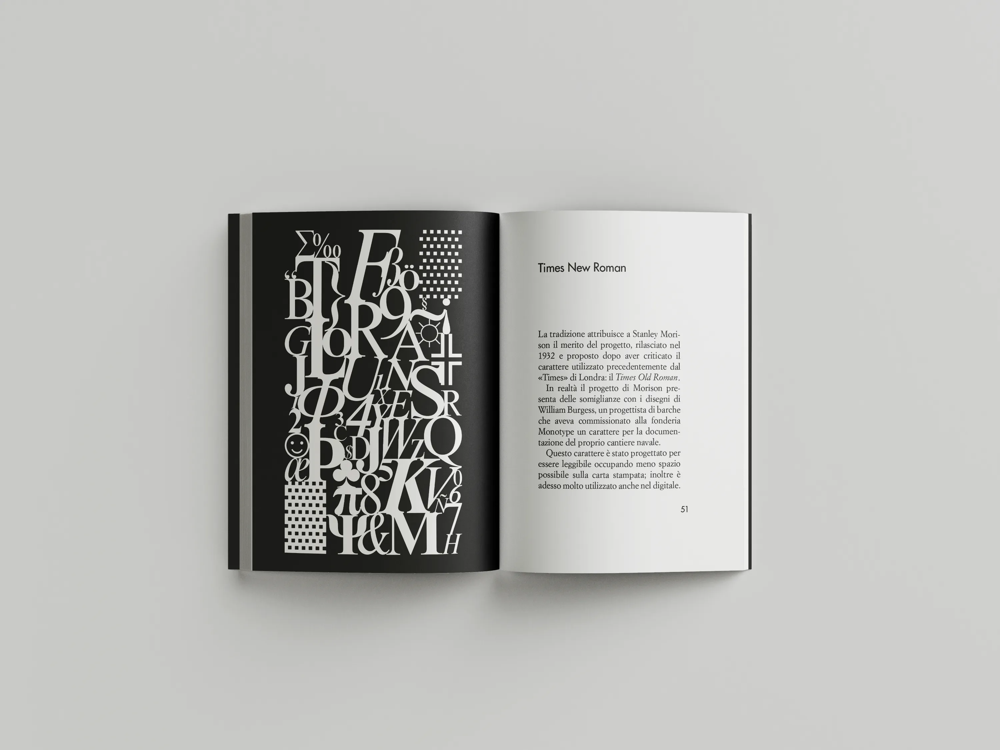
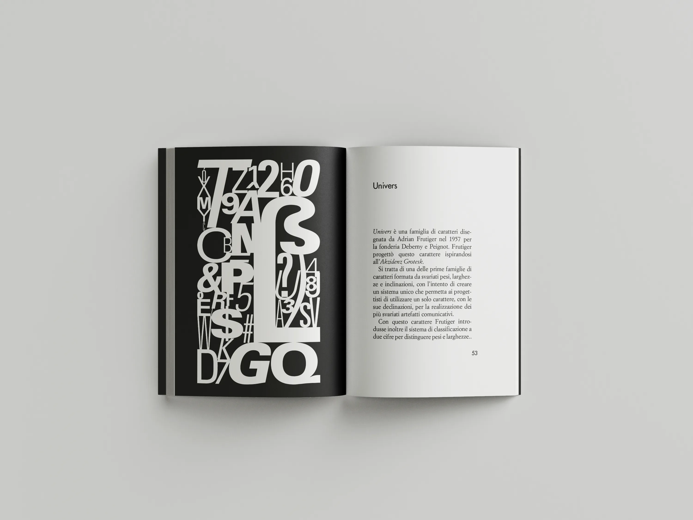
 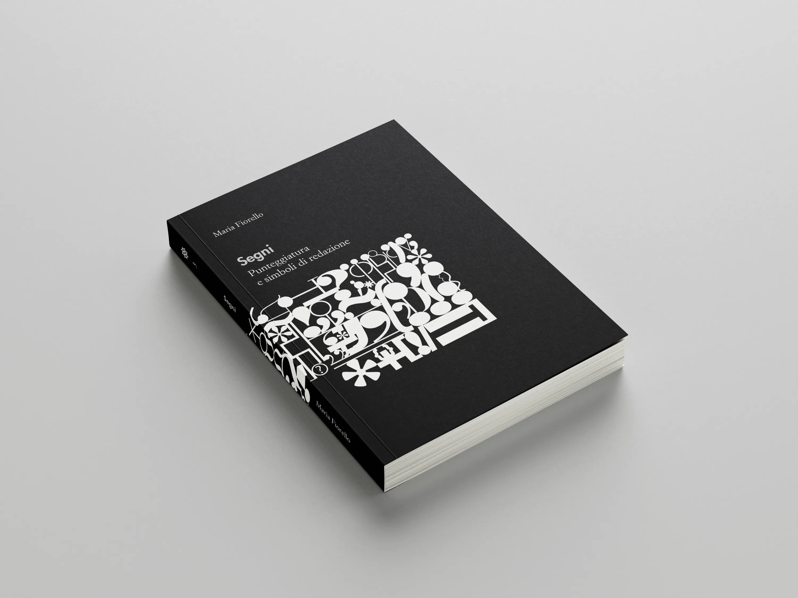
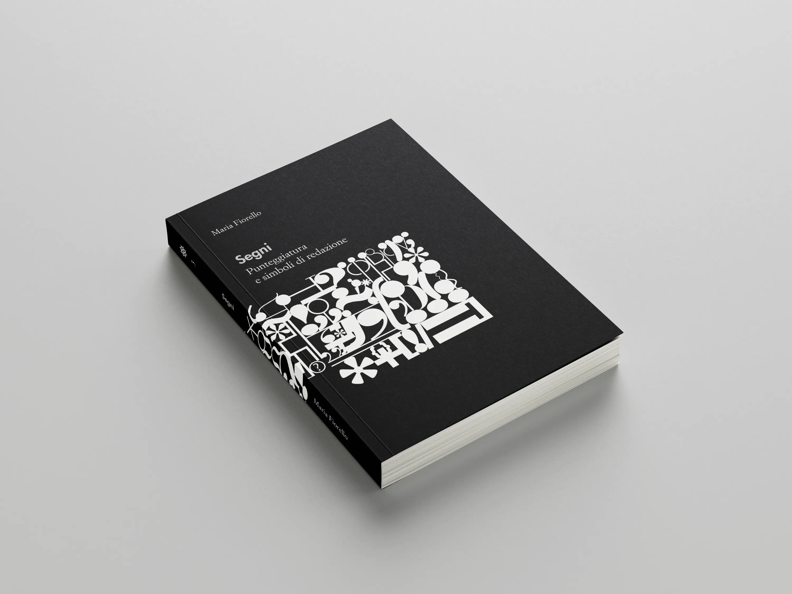
Il terzo e ultimo volume della collana «Alfabeti Tipografici» ha lo scopo di raccontare i segni d’interpunzione partendo da alcuni riferimenti storici che ripercorrono la loro introduzione e la progressiva normalizzazione del loro utilizzo in ambito tipografico. La seconda parte del volume descrive invece i segni del linguaggio redazionale, un codice universale che affonda le sue radici nella preistoria della tipografia, ovvero la trascrizione dei codici manoscritti.